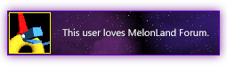

In case you couldn't already tell, I love to ramble, yap, and chat. If
you want to talk mutual interests, old web stuff, development, or just
want to exchange cool links... I would love to chat! I am also open to
art trades and collaborative work. Just toss me an email and I will
get back to you ASAP.
My email address is
thesaltedslug at proton dot me :)
Cohost /// Click the bug to see my
profile on Cohost.
It's a relatively small Tumblr-like community that is mainly used by
"indie web" dwellers and developers. I prefer it to Mastodon and
Fediverse communities because, in my opinion, Cohost has far more
diverse communities and content. The
development company that
runs it seems pretty cool, too.

Melonland /// The
Melonland forum
is probably my favorite community spot on the Web right now. There
are so many cool discussions and interesting things going on at all
hours of the day (except for Mondays).
Melon does a
wonderful job of running it and the members are all so kind and
open-minded. Click the image above to navigate to my forum
profile.